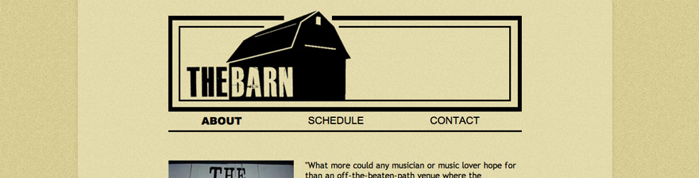

The Barn

- Problem:
- This site was done for Clayton Baker who in the summer seasons hires gigs for everyone in the area to come see. After all the bands pack up for the night its rave time! This site allows people to view all the information for the upcoming shows as well as a contact form for bands to sign up to play. It also has its own admin system I created by hand so that Clayton can update his own show information.
- Skills Used:
- Photoshop, Illustrator, HTML, CSS, Knockout.js, PHP.
- Live Link
- The Barn
- Other Screenshots:
-